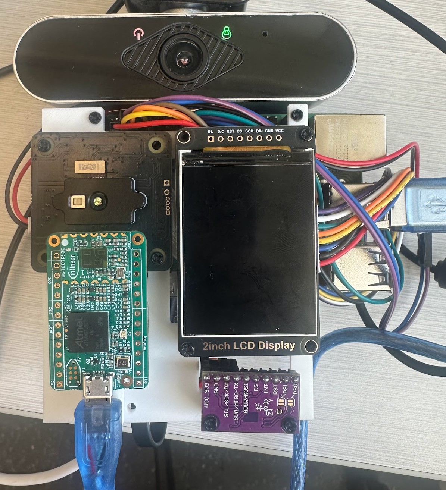
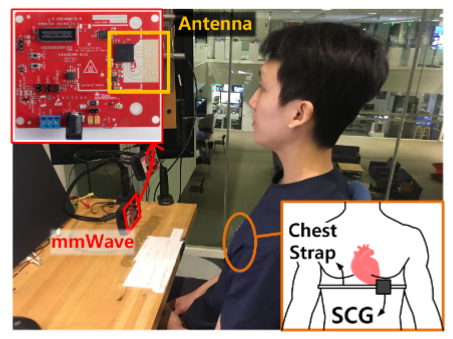
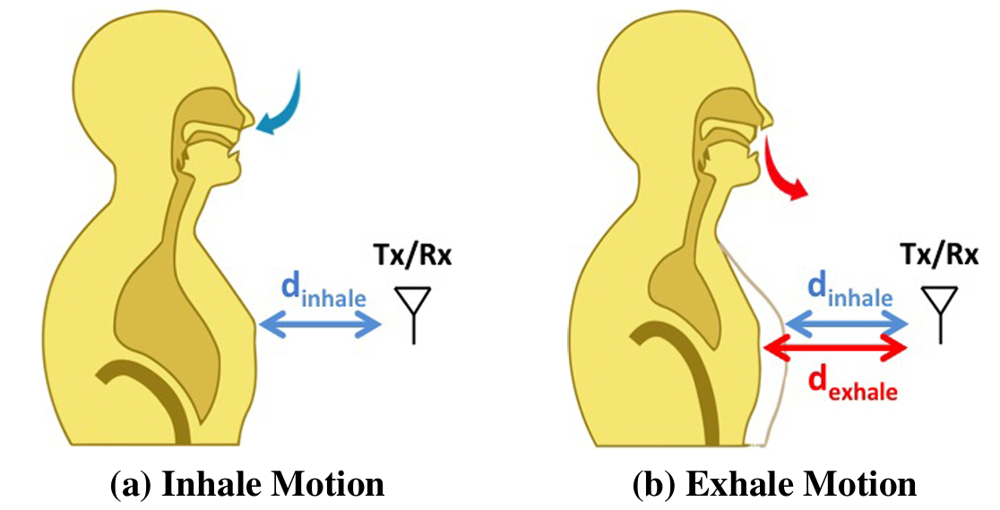
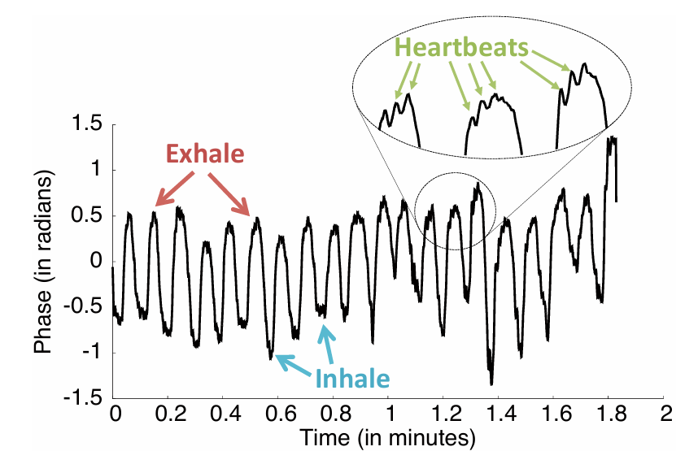
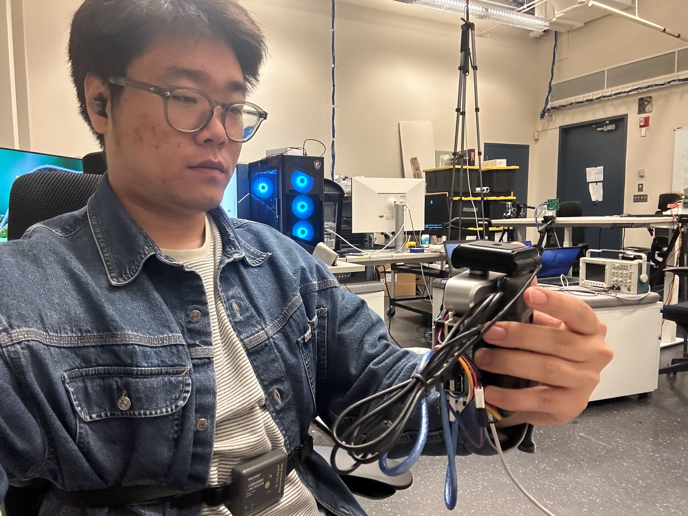

A handheld setup that pairs a 60 GHz mmWave radar with an RGB camera, for the cases where camera-only vital sensing fails.
Xinghua Sun · June 2026

The setup. 60 GHz Infineon BGT60TR13C radar, Arducam ToF, RGB webcam, BNO08x IMU, and a 2-inch LCD on a Raspberry Pi 4B with a battery pack. About the footprint of a phone in a thick case.
The short version
Problem. Remote photoplethysmography (rPPG) reads your pulse from tiny skin color changes. It fails on dark skin, in low light, and under motion.
Idea. A 60 GHz radar measures chest wall motion directly. It does not care about light or skin tone. It does care about hand motion.
Built. A handheld setup that streams radar, RGB, ToF, IMU, ECG, and a respiration belt in sync. The first piece of a future radar + camera benchmark.
01 · why thisWhy rPPG alone is not enough
Every heartbeat changes the optical absorbance of your skin by about one percent. With a good camera and a still face, that is enough for a phone to estimate your pulse. The algorithms are public. The product is compelling.
But it does not always work. Liao et al. [10] measured per-video success rates of passive smartphone rPPG across three skin tone groups, drawing on real-world data from a clinical trial. The success rate drops fast as skin tone gets darker. The algorithm is the same. The optical signal is not.
Skin tone group 1
58%
Skin tone group 2
45%
Skin tone group 3
25%
Per-video success rate of passive smartphone rPPG, from Liao et al. [10]. Same algorithm, different SNR.
Low light, head motion, walking, typing, bad camera angle, backlight. Pick almost any real-world condition and the SNR collapses [1, 2]. rPPG is not wrong. It is a thin signal that needs good conditions.
02 · the other modalityWhat a millimeter-wave radar sees
An FMCW radar is a ranging machine. At 60 GHz it resolves sub-millimeter changes in distance. That is fine enough to see a heartbeat, which moves the chest wall by a few millimeters, and breathing, which moves it by a few centimeters. The idea goes back to Adib et al. [11] on RF-based vital sensing at home, with later work showing that deep models on radar IQ can even reconstruct the seismocardiogram waveform [12]. Light in the room does not matter. Neither does skin tone.

A stationary lab setup. The radar points at the chest. A chest strap records the seismocardiogram for ground truth. Adapted from Pi-ViMo [3].

Inhale and exhale change the distance from the antenna to the chest wall by a few centimeters. A heartbeat does it by a few millimeters on top.

Unwrapped phase from a mmWave channel. Respiration is the slow oscillation. Individual heartbeats are the ripples on top. From Pi-ViMo [3].
There is a cost. The same sensitivity that lets the radar see your heartbeat also lets it see everything else. A hand twitch. A shoulder roll. The phone wobbling in your grip. Stationary mmWave vital sensing is mature, with 90th percentile error under 6 bpm [3, 6, 7]. Handheld mmWave is the open question [8]. That is where the camera comes back in. The motion that destroys the radar which needs to be corrected.
03 · the twistMake Vital Sensing Handheld

Held the way you hold a phone.
Almost every prior mmWave vital-sensing paper assumes a fixed setup and the subject staying still [3, 4, 6, 7, 11, 12]. The moment the sensor itself moves, the chest wall signal sits on top of a much larger motion variations. Remember that the heart beat only induce sub-mm displacement and the frequency is about the jitter caused by hand tremor.
Question 1: With camera and mmWave sensor sensitive to different motion patterns, can we improve the accuracy of handheld vital sensing?
Question 2: Can we do it with the same form factor a phone has, without external sensors strapped to the body? Literature mostly skip the form factor, with the closest prior work using high-power research-grade radar without pairing it with a camera [8].
04 · the setupOne Raspberry Pi, six sensors, one battery
Since the mmWave sensor on Pixel 4 is not accessible for customization, we built our own setup that has common sensors a phone would have. Every component is off-the-shelf and roughly consumer-priced. The point is not new hardware. The point is a faithful, synchronous capture of every modality a future phone could plausibly carry, plus the ground truth to train against.
mmWave radarInfineon BGT60TR13C, 60 GHz FMCW, low-cost and low-power
RGB cameraUSB webcam, 640×360 at 15 fps, for rPPG
ToF cameraArducam B0410, CSI, for depth context
IMUBNO08x, for handheld motion
ECG ground truthPolar H10 chest strap (BLE)
Respiration ground truthVernier Go Direct belt (BLE)
ComputeRaspberry Pi 4B + USB battery
Status display2-inch SPI LCD, for headless operation
05 · what was builtThe software and three dashboards
A FastAPI + WebSocket sensor hub runs on the Pi. Each sensor lives in its own process. The BLE devices share one thread so they can share the D-Bus connection.
Sync. Every sample is stamped at the Pi when it arrives.
Latency. Each client gets a latest-wins queue, so a slow browser drops old frames instead of buffering. Frames are compressed on the Pi and decoded off the main thread in the browser. The result: a 20 Hz stream renders smoothly with end-to-end latency under 100 ms and no drift over 10 minutes.
Three dashboards run on this hub. A multi-modal capture view. A radar-only vital-signs view with browser-side HR and RR estimation. An rPPG-only view that runs POS [14] on the webcam's JPEG frames (cross-checked against the rPPG-Toolbox [9]). All three open in any browser on the same Wi-Fi.
Multi-modal capture. Radar, ToF, RGB, IMU, ECG, and respiration streaming together in one view.
Radar vital signs. Browser-side HR and RR estimation from the unwrapped radar phase, with chest-strap and respiration-belt ground truth.
rPPG vital signs. POS algorithm on JPEG frames from the webcam, with Polar HR ground truth alongside.
06 · what's nextFrom the setup to dataset to model
Next: collect 5 to 10 hours of synchronized data from 10 to 15 subjects across the conditions that stress rPPG (low light, dark skin, walking, hand motion).
Train sensor fusion models [7] that learns from real ground truth when to trust which sensor. Build a mmWave + rPPG benchmark.
References
B. Acharya et al. The reliability of remote photoplethysmography under low illumination and elevated heart rates. npj Digital Medicine, 2025.
E. M. Nowara, D. McDuff, A. Veeraraghavan. A meta-analysis of the impact of skin type and gender on non-contact photoplethysmography measurements. CVPRW, 2020.
B. Zhang et al. Pi-ViMo: Physiology-inspired robust vital sign monitoring using mmWave radars. ACM Transactions on Internet of Things, 2023.
L. Xu et al. Soli-enabled noncontact heart rate detection for sleep and meditation tracking. Scientific Reports, 2023.
E. Gruzewska et al. UWB radar-based heart rate monitoring: A transfer learning approach. arXiv:2507.14195, 2025.
C.-H. Hsieh, T.-L. Tsai, P.-H. Tseng. Harmonic MUSIC method for mmWave radar-based vital sign estimation. arXiv:2408.01951, 2024.
Y. Wang et al. Vital sign monitoring in dynamic environment via mmWave radar and camera fusion. IEEE Transactions on Mobile Computing, 2024.
J. Gong et al. RF vital sign sensing under free body movement. Proc. ACM IMWUT, 2021.
X. Liu et al. rPPG-Toolbox: Deep remote PPG toolbox. NeurIPS Datasets and Benchmarks Track, 2023.
S. Liao, P. Di Achille, J. Wu et al. Passive heart-rate monitoring during smartphone use in everyday life. Nature, 2026.
F. Adib, H. Mao, Z. Kabelac, D. Katabi, R. C. Miller. Smart homes that monitor breathing and heart rate. CHI, 2015.
U. Ha, S. Assana, F. Adib. Contactless seismocardiography via deep learning radars. MobiCom, 2020.
J. Lien, N. Gillian, M. E. Karagozler, P. Amihood, C. Schwesig, E. Olson, H. Raja, I. Poupyrev. Soli: Ubiquitous gesture sensing with millimeter wave radar. ACM TOG (SIGGRAPH), 2016.
W. Wang, A. C. den Brinker, S. Stuijk, G. de Haan. Algorithmic principles of remote PPG. IEEE Transactions on Biomedical Engineering, 64(7):1479–1491, 2017.